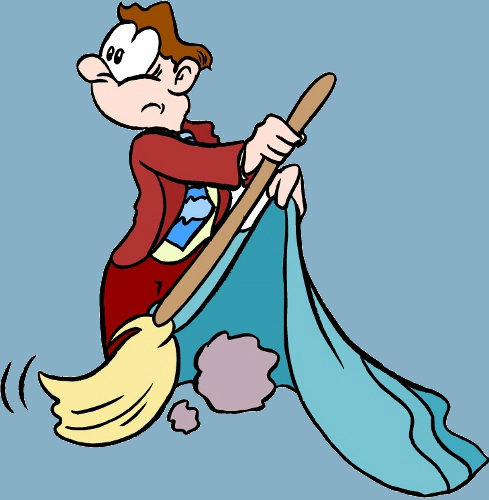

Wat is PTSS?
Psycho-educatie over posttraumatische stressstoornis
Na het meemaken van iets ingrijpends kan er sprake zijn van een posttraumatische stressstoornis.
Dit noemen we ook wel PTSS.
Misschien heb je hier wel eens over gehoord in de klas of op TV.
De oorzaak van PTSS is vaak een ingrijpende gebeurtenis. Deze kan je zelf hebben meegemaakt of hebben gezien, zoals bijvoorbeeld getuige zijn van een schietpartij. Ook getuige zijn van een gebeurtenis kan leiden tot een PTSS.
PTSS bestaat uit drie symptomen:
Herbeleving
Vermijding
Verhoogde prikkelbaarheid
Herbeleving
Herbeleving is dat herinneringen aan het trauma zich opnieuw gaan afspelen in je hoofd. Ook kan het voelen alsof het trauma opnieuw aan het gebeuren is.Je kan er ook nachtmerries over krijgen.

Vermijding
Vermijding betekent dat je gedachten, gevoelens of gesprekken gaat vermijden die je doen denken aan het trauma. Het kan ook zijn dat je het trauma niet kan herinneren omdat je er liever niet aan wil denken. Verhoogde Prikkelbaarheid
Verhoogde prikkelbaarheid bestaat uit heel veel dingen:Moeite met slapen
Prikkelbaarheid
Woede-uitbarstingen
Moeite met concentreren
Snel schrikken